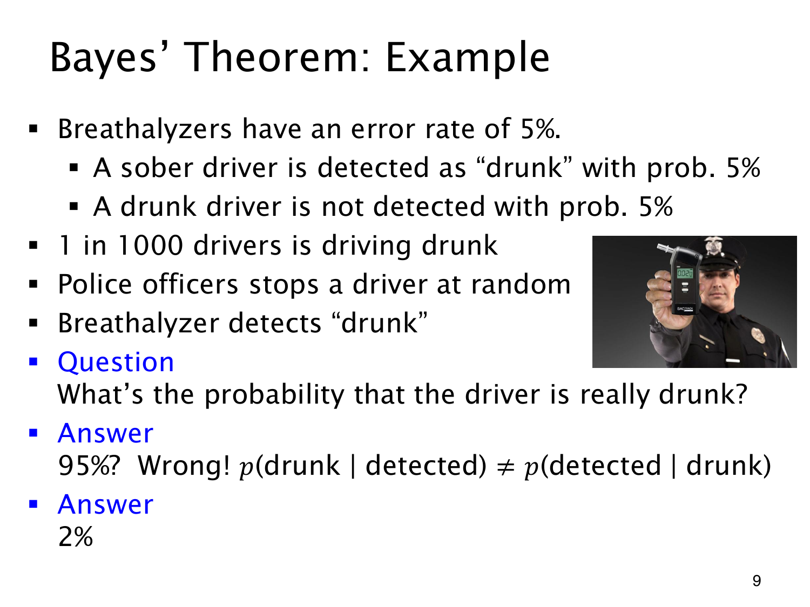

L1.10 · 第 9 页讲解原文
查看这一页课件

阳性结果中的真醉酒比例
课件设定一个酒精检测模型：醉酒者被检出的概率是 95%，清醒者误报的概率是 5%，随机司机中醉酒者占 1/1000。现在检测显示“醉酒”，要求司机实际醉酒的概率。
令 D 表示醉酒，T 表示阳性。p(T∣D)=0.95 告诉我们醉酒者多容易被检出；所求的 p(D∣T) 则要在所有阳性司机中找醉酒者。
p(D∣T)=0.001×0.95+0.999×0.050.001×0.95≈0.01866.
答案约为 1.87%，课件取整为 2%。分母同时算入“真阳性”和“假阳性”。
按这个模型，100000 名司机中约 100 人醉酒，约 95 人阳性；另外 99900 人清醒，却约有 4995 人误报。阳性的 5090 人中，真醉酒比例是 95/5090。
这里使用的全是课件假设。醉酒的先验概率（prior probability）很低，清醒者人数很多，即使误报率只有 5%，仍会产生大量阳性结果。